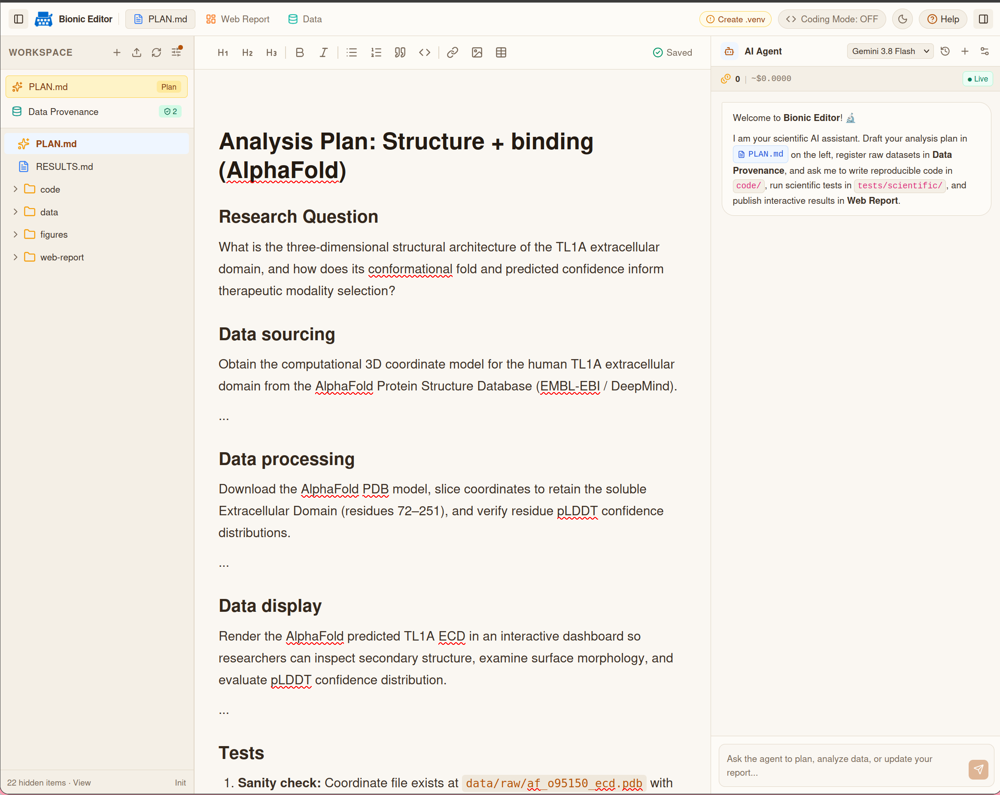
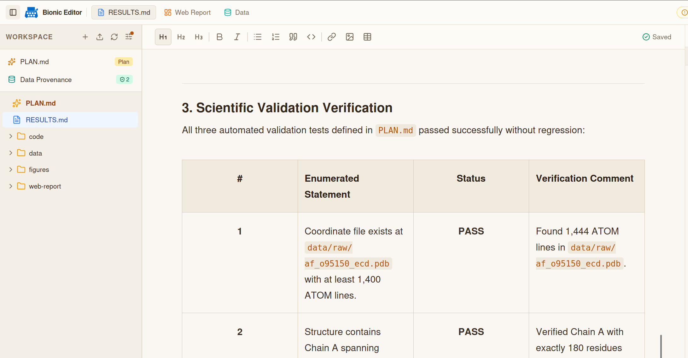
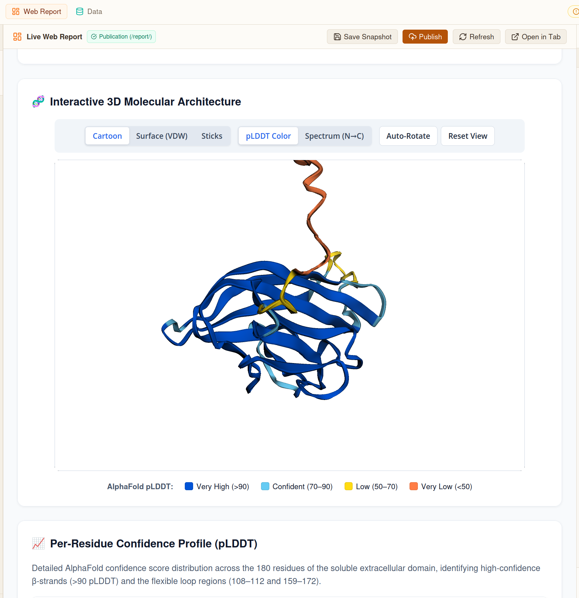
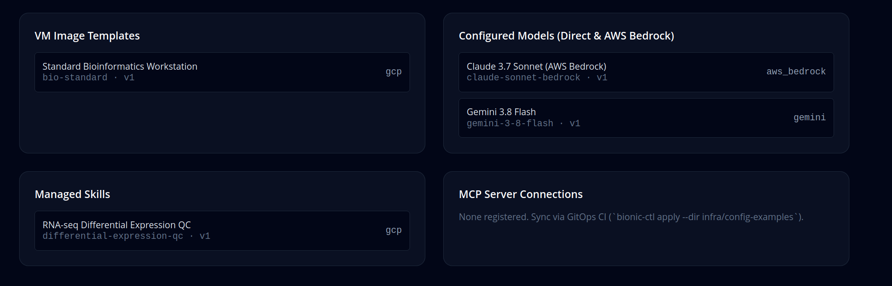

Bionic Editor is software that scientists can use to direct AI agents to accomplish scientific tasks.
Write plain-English analysis plans, let agents build durable, reproducible code and interactive web
reports, and manage enterprise sandboxing with Bionic Hub.
Write analysis plans like a scientist; AI can do the coding
The Bionic Editor allows users to direct AI agents by writing thorough analysis plans instead of chat,
where context can get lost and no one can track how the final work was created.
The Bionic Editor has agents implement users’ plans using durable, reproducible code, saving
datasets along the way. This ensures your work is reproducible while not requiring non-coders to do
anything with a command line.

The primary user interface for science should be a document defining the goals and approach to
research instead of chat. The Bionic Editor puts this front-and-center with chat off to the side.
Good science, pre-baked
In addition to being a text editor, we provide templates for starting a number of scientific tasks so
that the agents closely adhere to the scientific method. Some of these direct the agent to work in a
certain way; others direct the user to work in a certain way, like writing tests up front.

Our system prompts users to think up front about how they should verify agent output.
Everything the agent does is saved under the code/ folder, which the user can look at or
not.
Share work with scientific teams
Publish and version datasets and results. By default, the Bionic Editor creates interactive dashboards
using JavaScript that runs natively in the browser. Don’t know what that means? You don’t
have to; the result will be interactive.

All user work is published as a self-contained website, and the Bionic Hub provides a private area to
view, share, and explore interactive data.
Made for industry science and teams
Information security and sandboxing are first-class features in the Bionic Editor, so IT admins
don’t have to worry about users installing coding harnesses on their laptops. Admins can provision
service account permissions, machine templates, API keys, and model providers centrally.

IT administrators can configure templates for virtual agent sandboxes, specifying enterprise
permissions granted to the agents and which models are allowed.
Built for Every Part of Your R&D Organization
End Users
Scientists
Scientists are highly analytical professionals, but they aren’t necessarily coders. So how do we
give scientists all the power of the latest models for scientific research without starting with
“open the command line and curl -L https://...”?
The Bionic Editor has all the capabilities of a coding environment, but presents them in a way
scientists are accustomed to. In the Bionic Editor, scientists direct agents using an analysis plan: a
plain-English document that specifies the project aims, data, analysis, and tests. Then, the AI agent
implements it as code, ensuring that the work follows best practices for reproducible research.
The scientific user sees an analysis plan written in plain English and the resulting data as images or
an interactive dashboard. Underneath, the agent maintains all the code, instructions, and data so that
the work is fully inspectable and reproducible by another Bionic Editor user or a coder with their own
tooling.
Security & Infrastructure
IT & Informatics Teams
Your scientists are asking you to let them download AI coding harnesses that keep asking for filesystem
permissions and their passwords. You can see the potential risks immediately. However, if you restrict
access to coding harnesses on security grounds, your scientists won’t capture the value from your
AI enablement efforts. They need something beyond consumer chat apps that doesn’t require
knowledge of POSIX file permissions and API key handling.
The Bionic Hub is an application to manage and provision AI sandboxes with a UI that scientists
feel comfortable using. Bionic Hub isolates running agents into separate virtual machines and allows IT
admins to specify access to company resources at the service account level, so users never provide their
own credentials. It also lets IT admins bake corporate policy into system prompts, manage API keys
centrally, and route to models hosted on AWS Bedrock or other enterprise endpoints.
Just as importantly, it includes an internal publication option so scientists can share
interactive reports with their teams without accidentally publishing proprietary work to the public
internet.
FAIR Data Stewardship
Data Management Professionals
There are well-established best practices to make data FAIR (Findable, Accessible, Interoperable,
Reusable), a widely adopted framework for scientific data management. If you are a data management
professional within a life science organization, you likely have goals around organized, reusable data.
However, following these practices requires extra time and effort on top of a scientist’s daily
responsibilities, so data management tasks often take a back seat.
What if scientists could focus on their primary goal — scientific insight — and AI could
organize and document the data as they go along? That’s what the Bionic Editor does. We’ve
baked into the agent system best practices for data provenance, manifests, and reproducible research
learned from decades of supporting industry scientists.
Request Access
Private Beta
The Bionic Editor and Bionic Hub are in private beta. Email
info@rightbionic.com to discuss your use case and gain
access. I will need to talk to you to ensure you are human.